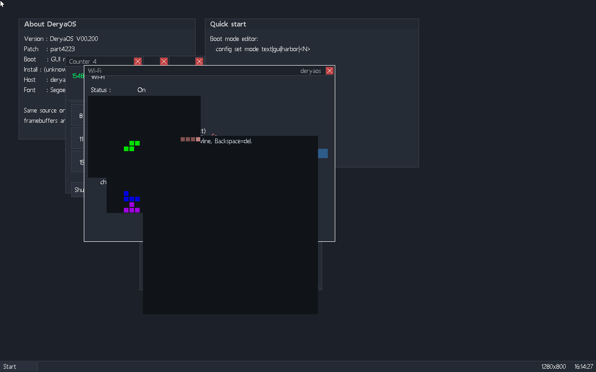
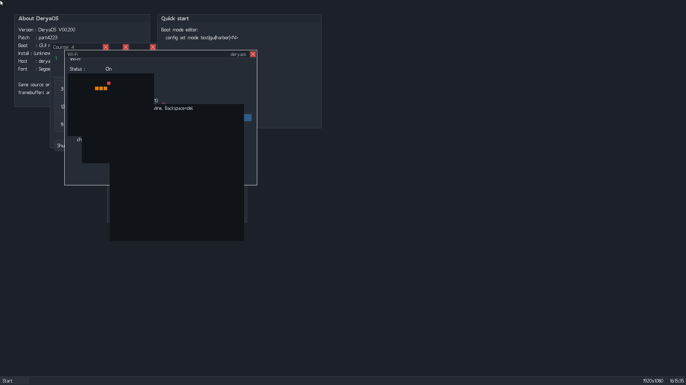

What it is
DeryaOS is written from the ground up: the boot chain, the kernels, the drivers, the GUI, the network protocols and the filesystems are all original code. The exact same source builds and runs on both 32-bit and 64-bit x86, so a fix lands on both at once.
Highlights
Native desktop
A real windowed GUI — draggable, resizable windows, a taskbar and start menu, with built-in apps: a text editor, file manager, web viewer, system tools and a few games.
Dual architecture
One codebase, 32-bit and 64-bit kernels, with preemptive multitasking on both.
Networking
An original TCP/IP stack — ARP, IPv4, ICMP, UDP, TCP, DNS and HTTP — driving real network cards.
Filesystems
Read/write FAT16, FAT32, exFAT and the native DeryaFS; read support for NTFS and ISO 9660.
Over-the-air updates
The system updates itself in the background and verifies every component cryptographically before applying it, with automatic rollback if a new build misbehaves.
Its own installer
Boots from USB or CD, partitions a disk, and installs — boot manager included.
Beta program
DeryaOS is being tested on real hardware and in virtual machines. We are looking for a small group of beta testers who can run it, push it, and report what they find — what works, what breaks, what feels wrong. Findings are reviewed together and turned into fixes.
It is early software: expect rough edges, and don't run it on a machine whose data you can't afford to lose. If that sounds like your kind of fun, get in touch.